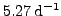
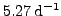

Given a time series showing two different peaks in the power spectrum, prewhitening of the dominant signal usually does not cause a major change in the height of the secondary peak in the spectrum of the residuals. Why does the corresponding sig change?
The situation is illustrated in Fig.39 displaying the sig (left panel) and power (right panel) spectra (in this sample just squared amplitude) generated by a synthetic time series. It consists of two sinusoidal signals,
,  , and
, , plus noise with unit rms error. The plots contain a comparison of the initial spectra (gray) and the spectra after subtraction of the first signal component. In the right panel, the power associated to the peak at
 differs only slightly between the two iterations, whereas the corresponding sig in the left panel increases dramatically in the second iteration.
, and
, , plus noise with unit rms error. The plots contain a comparison of the initial spectra (gray) and the spectra after subtraction of the first signal component. In the right panel, the power associated to the peak at
 differs only slightly between the two iterations, whereas the corresponding sig in the left panel increases dramatically in the second iteration.
The reason for this behaviour is that the sig refers to the probability of a random time series with the same rms error as the given one to produce a peak like the given one. In the first iteration, the sig calculation is based on the initial time series (rms error ), and in the second iteration, it relies on the residual time series after prewhitening of the peak at  , the rms error of which is . The ratio of rms errors () is in agreement with the root ratio of sigs at in the two iterations ().
, the rms error of which is . The ratio of rms errors () is in agreement with the root ratio of sigs at in the two iterations ().
This effect is more prominent for high sigs, because in this case prewhitening causes a major change in the statistical properties of the time series. If a peak with a low sig is prewhitened, the time series is affected marginally, and correspondingly, the sigs of other signals do not change much.


Next: The effect of binning
Up: Frequently Asked Questions
Previous: Frequently Asked Questions
Contents
Piet Reegen
2009-09-23